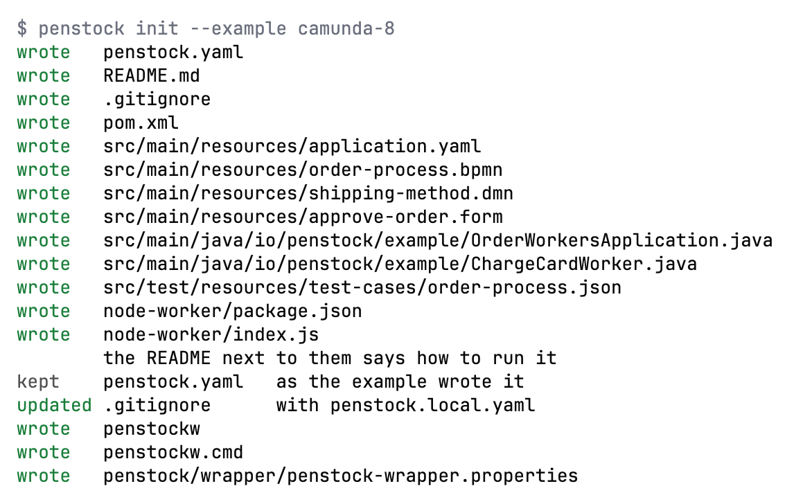

Guide / Start here
Getting started
From nothing installed to a checked, deployed process in about ten minutes.
1. Get Penstock
Penstock comes in more than one form. The features are the same in each. Pick the one you use.
Get Penstock
JetBrains
Open Settings | Plugins | Marketplace in any JetBrains IDE from 2023.1, search for Penstock and press Install. Or open the Marketplace page. See Installing in a JetBrains IDE.
VS Code
Install the extension from the Visual Studio Marketplace, in VS Code 1.88 or later. See Installing in VS Code.
Command line
Install it once, or run it without installing. It needs Node.js 22.22.2 or later in 22, 24.15.0 or later in 24, or 26 and later. The package is on npm.
npm install -g @kern0x1b/penstock-cli
npx @kern0x1b/penstock-cliA project can also pin a version with a wrapper script. See Command line.
In VS Code, run this in a terminal, or open the extension's page and press Install:
code --install-extension penstock.penstock2. Try the example
The quickest way to see everything work is the example: a small order process with workers, a decision, a form and test cases. The example project explains every file. Write it into an empty folder.
Write the example
JetBrains
Open an empty project and open the Penstock tool window. It offers Camunda 8 order process and Camunda 7 order process. Press one and confirm the dialog Start from an example with Create. A notification says where the example is.
VS Code
Open an empty folder in VS Code and open the Penstock view in the Activity Bar. A project with no diagrams offers the examples. Choose Camunda 8 order process or Camunda 7 order process to create it.
Command line
In an empty folder run penstock init --example camunda-8, or --example camunda-7. It writes the files and the penstockw wrapper.
penstock init --example camunda-8
3. Look at it, check it, deploy it
- Open
src/main/resources/order-process.bpmnin the editor. The diagram appears. - Press Check. A card lists what is wrong. A fresh example has nothing wrong. See Diagram check.
- Press Deploy. A popover opens, and the first time it asks for the engine address. Enter it, save, and deploy again. See Deployment.
Do it in your tool
JetBrains
Open the file from the Project view or the Penstock tool window. Check and Deploy are on the editor's toolbar.
VS Code
Open the file from the Explorer. Check and Deploy are on the toolbar of the editor.
Command line
There is no editor, so use the commands:
penstock check .
penstock deploy . --dry-run
penstock deploy .Start with your own diagram
- Open a
.bpmnfile. If you have none, create a file calledprocess.bpmnand open it. An empty file is fine. - If the diagram says nothing about its engine, one line appears above the canvas: Which engine runs this diagram? Press Camunda 8, Operaton, CIB seven, Camunda 7 or Classic BPMN. The answer is written to
penstock.yamlin the project root, which is created if there is none. It is asked once. - Draw. Drag elements from the palette on the left, or click an element and use the small pad next to it. Editing a diagram shows how.
- Select an element and fill in its properties in the Properties tab on the right. The properties panel explains the groups.
- Press Check. Fix what it lists, in the card or in the Problems tab.
Open a diagram
JetBrains
Double-click a .bpmn file in the Project view or in the Penstock tool window. The BPMN Editor and Text tabs at the foot of the editor switch between the picture and the XML. See The editor in the IDE.
VS Code
Double-click a .bpmn file in the Explorer. It opens in the Penstock editor. Penstock: Open as text opens the XML beside it. See Where things are in VS Code.
Command line
Not available on the command line. The command line has no editor. Use penstock show to list a diagram and penstock edit to change it.
What you see

- Toolbar along the top. Undo and Redo are on the left. Deploy is on the right. Everything else is in the More menu. See The toolbar and the More menu.
- Palette beside the canvas, with the elements you can draw.
- Canvas in the middle. It takes the theme of your tool, and the diagram opens fitted into it.
- Sidebar on the right, with a row of tabs: Properties, Scenarios, Problems, Comments, Monitor and Code. See The sidebar.
- Editor tabs below: the diagram, and Text for the raw XML of the same file.
The first minute
The first-run tour in your tool
JetBrains
The first time the editor opens it walks you through six things in a few words each: the palette, the properties panel, Check, the tool window, which it points out is on the stripe at the side of the IDE, Deploy and the More menu. It is shown once, and the fact that it has been seen is kept in ~/.penstock/preferences.json beside the toolbar choices. Show the tour again is in the More menu, under Help.
VS Code
The first time the editor opens, it shows a short tour. It is shown once. Penstock: Show the tour again in the Command Palette, or Show the tour again in the More menu, plays it again.
Command line
Not available on the command line. There is no editor and so no tour. penstock doctor prints the setup it would point at.
The actions used most are pinned to the toolbar to start with: auto layout, Check, Simulate, Monitor, Scenarios, Coverage, Migrate to Camunda 8, Deploy and the sidebar toggle. The pin in each row of the More menu and of the command palette moves an action on or off the bar. See The toolbar and the More menu.
Which files open in the editor
| Files | Opens in |
|---|---|
.bpmn, .bpmn.xml, .bpmn20.xml | The BPMN editor |
.dmn | The DMN editor |
.form that is a Camunda Form | The form editor |
Where to go next
Common problems
- Deploy is missing from the toolbar.
- Deploy is shown for Camunda 7, Camunda 8, Operaton and CIB seven projects. A Classic BPMN project has none. Change the engine in
penstock.yaml. - The question about the engine did not appear.
- It appears only for an empty diagram. A diagram that already says which engine it is for, or a project with
engineinpenstock.yaml, is not asked. - The example was not written.
- An example is written only into an empty folder, so it never overwrites your files.
The trial, and buying
Every machine starts with 30 days of Pro. You do not sign in or enter a card for the trial. When it ends, the machine is on the Free plan, and the editors, checks and deploy keep working.
To buy, use one of these links. Polar's checkout opens in your browser, and when you have paid, Penstock notices and asks for the code sent to your e-mail. There is no key to copy. The same licence works in every tool on the machine.
| Free | No charge, and every new machine starts with 30 days of Pro. |
| Pro | USD 9.00 per month or USD 90.00 per year |
| Team | USD 29.00 per month or USD 290.00 per year for each seat |
How to activate it, what a licence covers, Team seats, pipelines, working offline, moving a machine and cancelling are on Buying and signing in. What each plan includes is on Plans and licence.